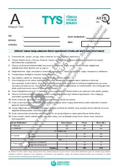

TYTürkçe Yeterlik Sınavı için hazırlanan okuma ve dinleme becerileri test kitapçığı.
Bu kitapçık, Türkçe Yeterlik Sınavı'nın okuma ve dinleme bölümlerine hazırlanmak veya bu becerileri değerlendirmek amacıyla Yunus Emre Enstitüsü tarafından hazırlanmıştır. Metinler ve sorular aracılığıyla adayların okuduğunu anlama, kelime dağarcığı ve dil yeterliliği seviyeleri ölçülmektedir.